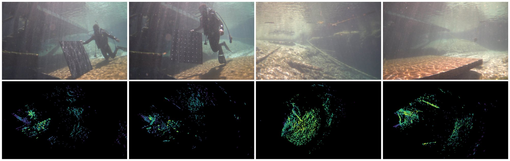
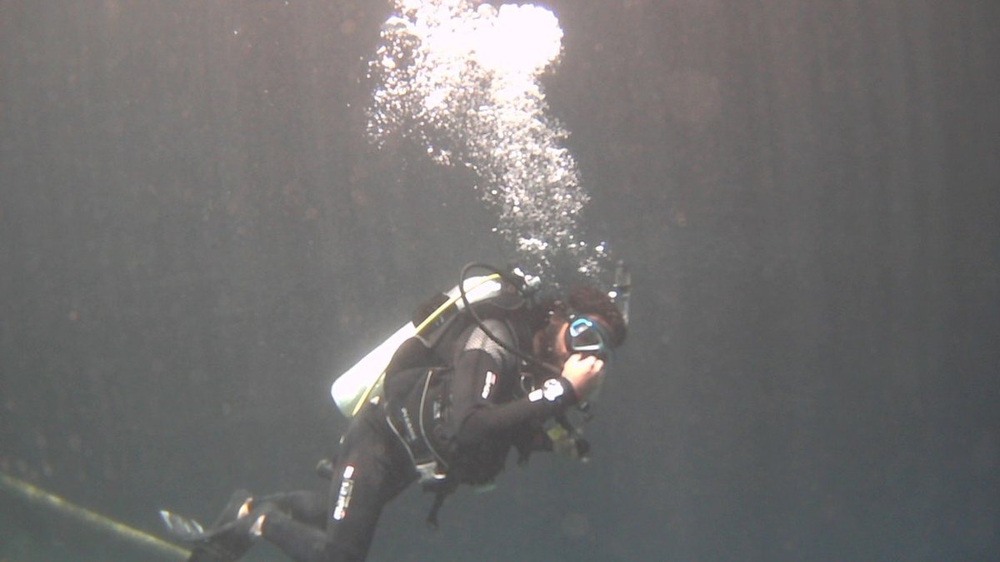
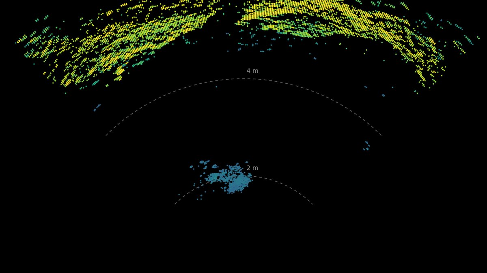
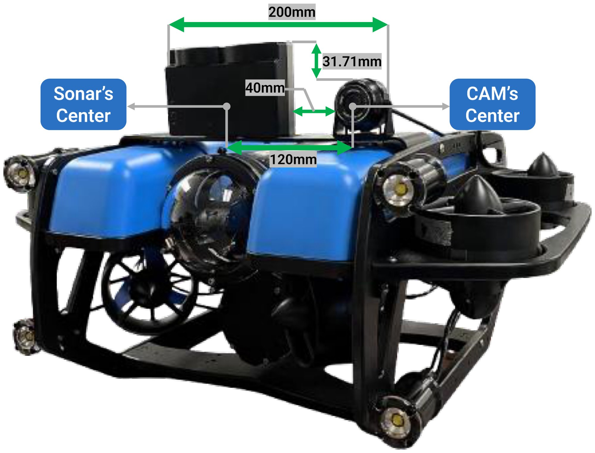
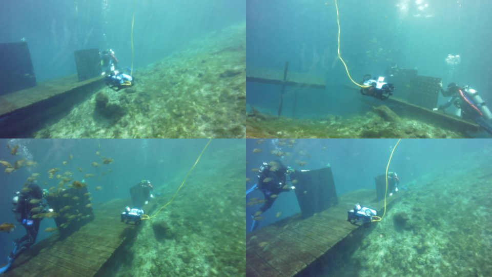
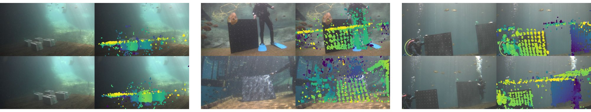

Trung Tien Dong
Trung Tien DonguScenes: A Multimodal RGB and 3D Sonar Dataset for Underwater Robot Perception
1ERA Lab, University of South Florida · 2University of Florida · 3Seoul National University

Abstract
Robust perception is essential for the deployment of autonomous underwater robots. However, optical cameras become unreliable under poor illumination and backscatter. Forward looking (2D) acoustic sensors remain effective under these conditions, but they measure range and bearing while leaving elevation unresolved, creating an ambiguity that prevents individual sonar returns from being localized in three dimensional (3D) space. This complicates the sensor use for 3D scene understanding and precise object detection.
We introduce uScenes, a multimodal underwater dataset containing synchronized 3D multibeam sonar point clouds and RGB imagery. The dataset contains 110 scenes and 95,834 synchronized observations, representing 277.6 minutes of data collected across multiple field sessions. uScenes establishes a foundation for underwater sensor fusion, cross modal representation learning and 3D scene understanding.
Explore the data

RGB camera
3D sonar (BEV)1 / 7 · synchronized RGB and 3D sonar from uScenes
Contributions
- A field-collected underwater dataset containing 110 scenes, 95,834 synchronized RGB and 3D multibeam sonar observations, and 277.6 minutes of recordings acquired from a mobile robotic platform.
- Metric sonar point clouds with 3D position and normalized signal strength, together with paired RGB images, timestamps, scene metadata, and clearly documented coordinate conventions.
- The complete construction methodology — sensing platform, temporal association, point cloud generation, data organization, and optic–acoustic calibration procedures.
Data collection



BibTeX
@misc{dong2026uscenes,
title = {uScenes: A Multimodal RGB and 3D Sonar Dataset for Underwater Robot Perception},
author = {Trung Tien Dong and Zhenqi Wu and Aditya Penumarti and Zi-Hao Zhang and Micaiah Bartlett and Jane Shin and Xiaomin Lin},
year = {2026},
eprint = {2608.27795},
archivePrefix = {arXiv},
primaryClass = {cs.RO},
url = {https://arxiv.org/abs/2608.27795}
}